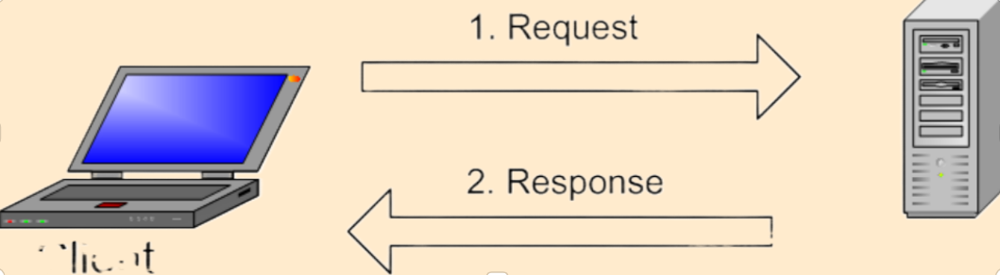

Vad avses med termerna klient och server?
Server är ett program som utför uppgifter på begäran av klient. Klient och server brukar kommunicera via ett tydligt gränsnitt. Klient- och serverprogram kan ligga på olika datorer och kommunicera över datornätverk.

Beskriv vad var och en av protokollen TCP och IP gör på sändande och mottagande sida.
På den sändande sida gör protokollet följande:
- Dela upp datat som ska skickas i mindre hanterbara bitar. De kallas för paket.
- Lägga till adressinformation till paketen så att mottagaren förstår att den ska ta emot paketen.
- Förbereda data för fysisk sändning till kabeln.
På den mottagande sidan skall protokollet:
- Plocka upp inkommande paketen.
- Transportera dem till datorn.
- Förbereda innehållet för att presentera det till dator.
Beskriv de delar som följande url består av: http://webbteknik.abc.se:8082/kurs1/uppg/u1.html#fragor
http - protokollen som används, http
webbteknik.abc.se:8082 - domän (omvandlas till dators ip adress) och port
kurs1, uppg - mappen i filträdet på domändator
u1.html - namnet på webb-sidan
#fragor - intern länk på webb-sidan